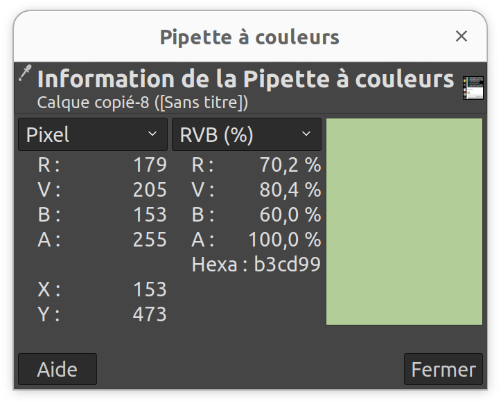

le programme suivant affiche un point
"use strict";
let vertex=`
attribute vec2 vertexPosition;
void main() {
gl_Position = vec4(
0.0,
0.0,
0.0,
1.0
);
gl_PointSize=3.0;
}
`;
let fragment=`
precision mediump float;
void main() {
gl_FragColor = vec4(
0.4,
0.5,
0.3,
0.7
);
}
`;
let canvas = document.getElementById("canvas1");
canvas.width=5;
canvas.height=5;
canvas.style.width="100px";
canvas.style.height="100px";
canvas.style.border = "1px outset gray";
canvas.style.imageRendering="pixelated";
let gl = canvas.getContext("webgl");
let program = gl.createProgram();
const vertexShader = gl.createShader(gl.VERTEX_SHADER);
const fragmentShader = gl.createShader(gl.FRAGMENT_SHADER);
gl.shaderSource(vertexShader, vertex);
gl.shaderSource(fragmentShader, fragment);
gl.compileShader(vertexShader);
gl.compileShader(fragmentShader);
gl.attachShader(program, vertexShader);
gl.attachShader(program, fragmentShader);
gl.linkProgram(program);
gl.useProgram(program);
gl.bindFramebuffer(gl.FRAMEBUFFER, null);
gl.drawArrays(gl.POINTS, 0, 1);
le carré suivant avec une bordure est le canvas. Le carré intérieur est le point tracé en WebGL.
Une capture d'écran collée dans Gimp, pour connaitre la valeur de la couleur.
Comparaison avec le calcul théorique
co = Cs * as + Cb * ab * (1-as)
ao = as + ab * ( 1- as)
j'ai trouvé cette formule ici: www.w3.org/TR/compositing-1/#generalformula
Cs = ( 0.4 , 0.5 , 0.3 )
as = 0.7
Cb = ( 1 , 1 , 1)
ab = 1
co = ( 0.58 , 0.65 , 0.51)
ao = 1
C'est différent !!!
On modifie le gl_FragColor pour tenir compte que le premultiplied est , par défaut, fixé à TRUE
let fragment=`
precision mediump float;
void main() {
gl_FragColor = vec4(
0.4,
0.5,
0.3,
0.7
);
gl_FragColor.rgb *= gl_FragColor.a;
}`;
On a bien la même couleur que celle calculée: RGB= ( 0.58 , 0.65 , 0.51)
Un peut aussi fixer le premultiplied à faux.
let gl = canvas.getContext("webgl",
{premultipliedAlpha: false}
);
Dans ce cas, inutile d'effectuer la prémutiplication dans le fragment.
precision mediump float;
void main() {
gl_FragColor = vec4(
0.4,
0.5,
0.3,
0.7
);
}
...
...
gl.clearColor(0.5,0.5,1,1);
gl.clear(gl.COLOR_BUFFER_BIT);
gl.drawArrays(gl.POINTS, 0, 1);
On note que le clearcolor affecte la couleur du canvas, mais pas celle du point !
on ajoute une blendfunc
gl.enable(gl.BLEND);
gl.blendFunc(gl.ONE,gl.ONE_MINUS_SRC_ALPHA)
la couleur du point est maintenant affectée. Il ne reste plus qu'à la calculer
test avec premultiplied alpha false
let vertex=`
attribute vec2 vertexPosition;
void main() {
gl_Position = vec4(
0.0,
0.0,
0.0,
1);
gl_PointSize=3.0;
}`;
let fragment=`
precision mediump float;
void main() {
gl_FragColor = vec4(
0.4,
0.5,
0.3,
0.7
);
}`;
//...les lignes où l'on crée le canvas...
let gl = canvas.getContext("webgl",{premultipliedAlpha:false});
//... les lignes où l'on compile le shader...
gl.bindFramebuffer(gl.FRAMEBUFFER, null);
gl.enable(gl.BLEND);
gl.blendFuncSeparate( gl.SRC_ALPHA, gl.ONE_MINUS_SRC_ALPHA, gl.ONE, gl.ONE_MINUS_SRC_ALPHA );
gl.clearColor(0.5,0.5,1,1);
gl.clear(gl.COLOR_BUFFER_BIT);
gl.drawArrays(gl.POINTS, 0, 1);
gl.enable(gl.BLEND); gl.blendFuncSeparate( gl.SRC_ALPHA, gl.ONE_MINUS_SRC_ALPHA, gl.ONE, gl.ONE_MINUS_SRC_ALPHA ); /* RGB = SRC_ALPHA * sourceColor + (1-SRC_ALPHA) * destColor A = SRC_ALPHA + destAlpha * ( 1 - SRC_ALPHA) sourceColor = gl_FragColor destColor = clearColor RGB = 0.7 * ( 0.4 , 0.5 , 0.3) + 0.3 * ( 0.5 0.5 1) = = (0.43 , 0.5 , 0.51) A = 0.7 + 1 * 0.3 = 1 */ gl.clearColor(0.5,0.5,1,1); gl.clear(gl.COLOR_BUFFER_BIT); let array1=[] const mulArrays = (arr1, arr2) => { return arr1.map((e, index) => e * arr2[index]); }